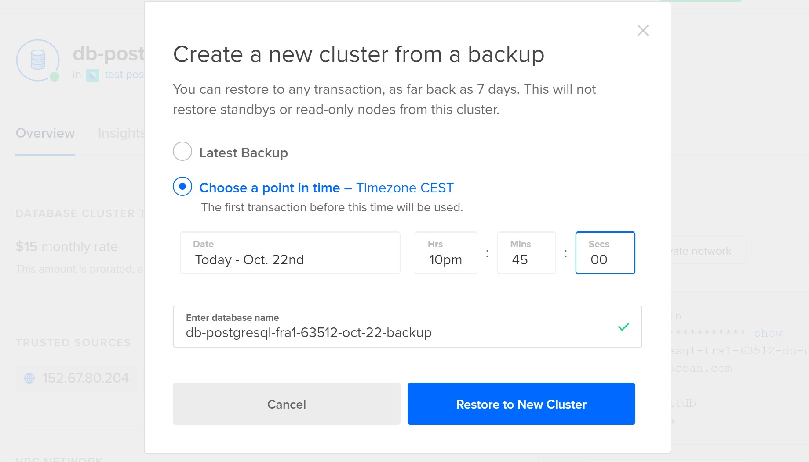
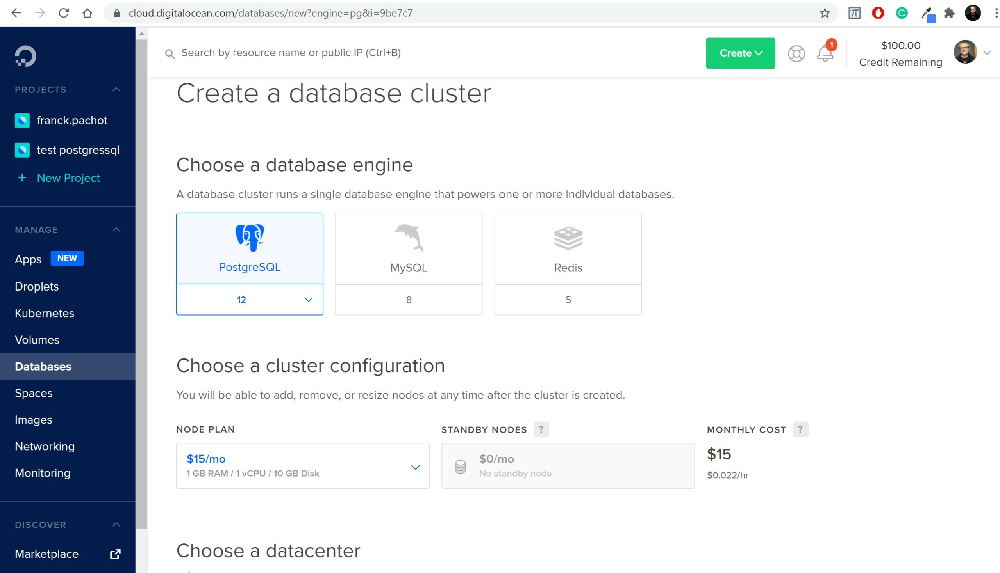
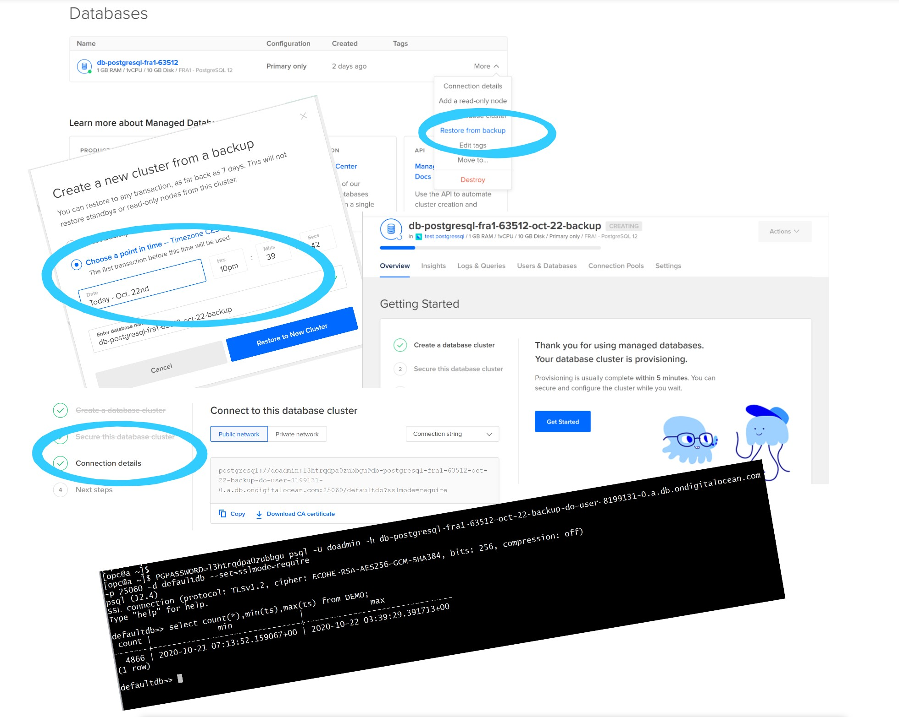
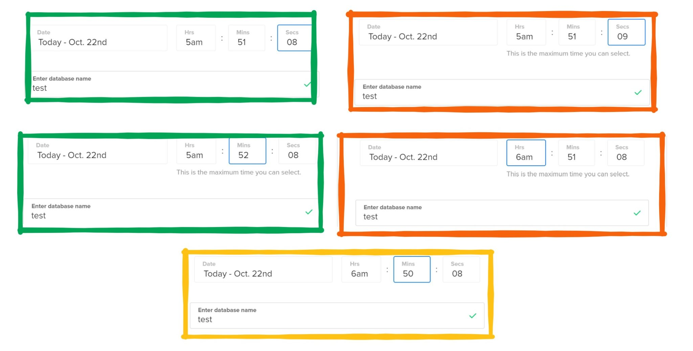
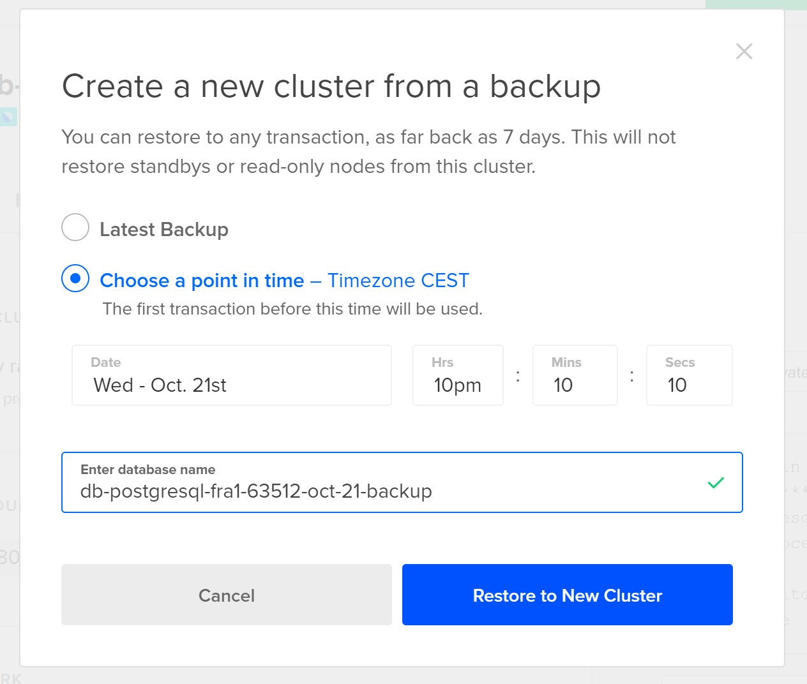
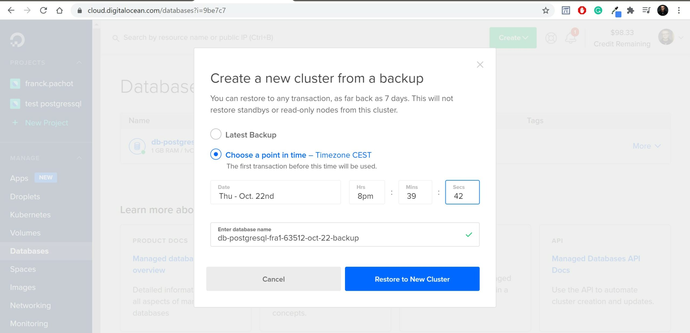
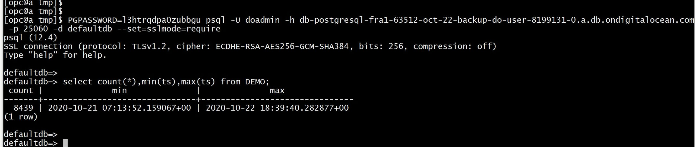

This was first published on https://www.dbi-services.com/blog/what-is-a-database-backup-back-to-the-basics/ (2020-10-22)
Republishing here for new followers. The content is related to the versions available at the publication date.
.
TL;DR:
I’ve written this after reading “We deleted the production database by accident 💥” by Caspar von Wrede on the keepthescore.co blog. What scares me the most is not that they dropped a production database but that they have lost 7 hours of transactions when restoring it.
I appreciate it when people write a public transparent postmortem and lessons learned. People read this and think about it. I’ve seen 3 categories of comments here:
The funny thing is that I wrote this thinking I’m in the 3rd category. Because I’ve read DigitalOcean documentation and left a comment to tell them how they can still recover those 7 hours. And while writing this blog post, and testing this idea, I realize that I was actually in the second category… not knowing how it actually works.
Databases not only apply the changes to their persistent storage. They also log all modifications in order to be able redo or undo the changes in case of failure. I’ll take the PostgreSQL example because that is the database used by this “we deleted the production database” article. The changes are made to the files under PGGDATA/base and the transaction log is written under PGDATA/pg_wal as Write Ahead Logging (WAL).
Then when we want a physical copy of the database, for backup or other purposes, we:
There are really two independent threads to protect the database: backup of files (usually daily) and archival of WAL (which are smaller and backed-up more often)
Of course, there are many ways to do those copies but it is a physical copy so that a recovery is:
With this, we can safely throw numbers to define an SLA (Service Level Agreement). The Recovery Time Objective (RPO) is the time it takes to get the database recovered. With a physical database backup, it can be estimated from the database size (and storage specification, and number of threads). The Recovery Point Objective (RPO) is about the accepted data loss. In an ACID database, the committed transactions must be durable. This means that no data loss is accepted. When you commit a transaction, the database ensures that the WAL is fsync’ed to disk. Your RPO depends on the backup of the WAL.
That’s a common misconception. People think of a backup like when you save a document to disk: in case of crash, you can get it back to the point in time when it was saved. But that’s wrong. The SQL equivalent of “save to disk” is COMMIT, not BACKUP. The frequency of the backup of database files does not determine the RPO. That’s the backup of the WAL, which happens more frequently (and because it is sequentially written it can even be streamed to another availability zone). The frequency of the backup of database files is important only for the RTO: the less WAL you have to apply on the fuzzy datafiles you restored, the faster you can open the recovered database.
It is important to understand those two steps in database recovery:
When a developer asks you to take a backup before an application release, in order to be able to restore this state if he makes a mistake, you do not need to take an additional backup. You just note this point-in-time (can be with pg_create_restore_point) and your normal backup plan is sufficient to recover to any point-in-time. A database is not like a file with data. A database is continuously moving with changes from concurrent sessions. Its state depends on how those transactions will end (commit or rollback). It holds your data (in tables), redundant data (like indexes), metadata, and a log of current and recent transactions. When you backup a database, you backup all that. When you recover a database, you restore all that and recover it to the desired point-in-time.
I’m talking about “backup of the database” here, which is different from “backup of data”.
When you take a pg_dump, you export some data and metadata as-of a specific point-in-time. But you don’t export the log of transactions, you don’t export the physical layout. This can be considered as a logical “backup of data”. But it is not a “backup of the database”. The nuance here is database vs. data. It is also about physical vs. logical. When you import from a dump, all tables are created, and rows inserted, and then indexes created. Even if you get the same data, you don’t have the same database. The physical layout is different (and then the performance – think about index correlation factor). The time to build the indexes is long and hard to predict (depends on memory available, cache, prefetching, CPU…) That’s about RTO: long and unpredictable. About RPO it is even worse: you will always lose some committed transactions when you import from a dump, because you can restore but not recover to a further point-in-time.
A dump is not a backup of your database. It can be useful, for sure, because a logical export is more flexible to get back a previous database object, to generate DDL, to import to a different version, different platform. It is very good for migrations and data movement. And it can be part of your recovery plan. But it cannot substitute to a database backup. Let’s take an analogy with software. If a server crashes, I can start another one with the same image and it will be exactly the same server which I can run immediately. If I have no image, I can install the OS and software again, apply the same patches, configure it… but that will not be exactly the same server: I need to test it again before opening it for production.
The most important is not the backup but being able to recover it easily (because when you will need it, you will probably be at a high-stress level, and with many other problems to solve). It is like when you buy new snow chains for your car. Easy to put them on when you are in your garage. Not the same if the first time you unbox them is on a slope with 1 meter of snow and freezing cold. And this “We deleted the production database by accident 💥” article is the best example:
Today at around 10:45pm CET, after a couple of glasses of red wine, we deleted the production database by accident 😨
After 5 minutes of hand-wringing and panic, we took the website into maintenance mode and worked on restoring a backup. At around 11:15pm CET, 30 minutes after the disaster, we went back online, however 7 hours of scoreboard data was gone forever 😵.
The time to restore (RTO) was 30 minutes, which is good given the context. But the data loss (RPO) of 7 hours was quite bad. And do you know why? Initially, when looking at DigitalOcean documentation and console, I thought it was simply because they clicked “Restore to New Cluster” without changing “Latest Backup” for the point to restore to. Then it restored the database as of the time of the latest backup (which was 7 hours ago) rather than a specific point in time (just before the accidental drop). Because of the stress (and maybe the glasses of wine ;)) and because they never tested it, tried it, document it, they may have chosen the bad option instead if this one:

But I was wrong. Never rely on what you see in the documentation or console. When it is about backup recovery: test it, test it, test it.
I have created the same database than the one they have lost: the $15/month PostgreSQL managed service in DigitalOcean:

You can try the same, there’s a $100 credit trial. The creation of the database is easy. Just follow the steps to secure it (which IP or CIDR can access to it) and to connect (you have the psql flags to copy/paste).
The documentation for this service says:
I understand it as being able to restore to any point in time within the last 7 days, right? Is that simple? Did they lost 7 hours of transactions when it would have been so easy to loose nothing?
In order to test it I’ve run the following:
PGPASSWORD=l3htrqdpa0zubbgu psql -U doadmin -h db-postgresql-fra1-63512-do-user-8199131-0.a.db.ondigitalocean.com -p 25060 -d defaultdb --set=sslmode=require <<'SQL'
drop table if exists DEMO;
create table DEMO as select current_timestamp ts;
select * from DEMO;
SQL
export PGPASSWORD=l3htrqdpa0zubbgu
while true
do
psql -e -U doadmin -h db-postgresql-fra1-63512-do-user-8199131-0.a.db.ondigitalocean.com -p 25060 -d defaultdb --set=sslmode=require <<<'insert into DEMO select current_timestamp;' ; sleep 15 ; done
This creates a table and inserts the current timestamp every 15 seconds. I’ve started it on Oct 21 09:13:52 CEST 2020 (I’m running in CEST but the PostgreSQL is UTC so the first timestamp recorded is 07:13:52). Two days later, here is what I have in the table:
Oct 22 20:39:40 insert into DEMO select current_timestamp;
Oct 22 20:39:40 INSERT 0 1
defaultdb=> select count(*),min(ts),max(ts) from DEMO;
count | min | max
-------+-------------------------------+------------------------------
8438 | 2020-10-21 07:13:52.159067+00 | 2020-10-22 18:39:25.19611+00
(1 row)
At Oct 22 20:39:40 after the last INSERT I have 8438 rows from the begining (2020-10-21 07:13:52 UTC) to now (2020-10-22 18:39:25 UTC).
I have no idea how they came to drop the database because I tried and cannot. It is a managed database and I can connect only to ‘defaultdb’ and you cannot drop a database where you are connected to. Then I just dropped the table:
defaultdb=> drop table DEMO;
DROP TABLE
defaultdb=>
I am at Oct 22 20:39:45 CEST here and the last inserted row (committed as I am in autocommit) is from Oct 22 20:39:25 CEST. The next insert fails as the table is not there anymore:
Oct 22 20:39:55 insert into DEMO select current_timestamp;
ERROR: relation "demo" does not exist
LINE 1: insert into DEMO select current_timestamp;
Then my goal is to recover with no data loss at the point in time just before the drop of the table. I’ll restore and recover to Oct 22 20:39:42 CEST
It seems quite straightforward: just select “Restore from backup”, then “Choose point in time”, then wait and connect with the provided database host:

But… look at the psql screenshot connecting to the restored database, there’s a problem here. Here is what was restored:
[opc@a ~]$ PGPASSWORD=l3htrqdpa0zubbgu psql -U doadmin -h db-postgresql-fra1-63512-oct-22-backup-do-user-8199131-0.a.db.ondigitalocean.com
-p 25060 -d defaultdb --set=sslmode=require
psql (12.4)
SSL connection (protocol: TLSv1.2, cipher: ECDHE-RSA-AES256-GCM-SHA384, bits: 256, compression: off)
Type "help" for help.
defaultdb=> select count(*),min(ts),max(ts) from DEMO;
count | min | max
-------+-------------------------------+-------------------------------
4866 | 2020-10-21 07:13:52.159067+00 | 2020-10-22 03:39:29.391713+00
(1 row)
defaultdb=> \q
The latest row is 2020-10-22 03:39:29 UTC which is Oct 22 05:39:42 CEST… 15 hours of data lost! I’ve taken all screenshots. I don’t see any mistake in the point in time I’ve set (actually there’s one, the screenshot here shows 10pm where it should be 8pm… at 10pm the table was already dropped, but same conclusion). Don’t rely on what you’ve heard. Don’t even trust the documentation. Always test it. Here, I clearly missed something whether it is a bug or a feature.
I tried again, and then realized that when you select a day for the “point in time” the hour/minute/seconds are set to a default. You can change it but it shows some message below it. When you select the first day available you get a “This is the minimum time you can select.” which makes sense as you cannot recover to before the first backup. But you also get a “This is the maximum time you can select.” when you choose the last day. Does this mean that you cannot recover beyond the last backup? I played with some variations moving the hour/minute/second around the proposed date:

I did a final test to see if I can recover to any point-in-time when it is between the first and last backup:

[opc@a tmp]$ PGPASSWORD=l3htrqdpa0zubbgu psql -U doadmin -h db-postgresql-fra1-63512-oct-21-backup-do-user-8199131-0.a.db.ondigitalocean.com -p 25060 -d defaultdb --set=sslmode=require
psql (12.4)
SSL connection (protocol: TLSv1.2, cipher: ECDHE-RSA-AES256-GCM-SHA384, bits: 256, compression: off)
Type "help" for help.
defaultdb=> select count(*),min(ts),max(ts) from DEMO;
count | min | max
-------+-------------------------------+------------------------------
3083 | 2020-10-21 07:13:52.159067+00 | 2020-10-21 20:10:05.42378+00
(1 row)
This is fine. I selected Oct 21 22:10:10 CEST and I get 20:10:05 UTC – no data loss here.
So, in summary, on this DigitalOcean service, you can recover to any point in time between the first backup available (7 days ago) and the last backup available (can be up to 24 hours ago). This clearly means that they have the data file backups and the WAL. Such granularity cannot be achieved with a dump. But it seems that they consider only the WAL that were there for the last backup. Technically, this is a pity because WAL is there. This could be restored to the point of failure without any data loss. But this service is cheap so maybe they do it on purpose to sell one with lower RPO? They have a service with a standby database, where the WAL is streamed to another node. In any case, I think that the documentation and the GUI are not clear and this will, unfortunately, continue to feed the myth that the last backup is the highest point in time that can be recovered, which is wrong. For user errors (like dropping a table or a database) all WAL is available and this can be recovered with no data loss.
I’m adding this one day after testing and publishing this post. I was unable to recover to the point-in time just before the failure because this DigitalOcean managed database ignores the WAL after it. What is sad is that the WAL is still there. One day later (so, one backup later) the no-data-loss point-in-time I wanted to restore is within the recoverable point-in-time. Let’s try again to validate my guess:


Perfect. I recovered all my data. Even more than I thought: there was an insert at 20:39:40 just 200 milliseconds before the drop of the table.
This proves that the backup technique is perfectly ok, ready to provide a no-data-loss point-in-time recovery with low RTO and RPO. But, by lack of understanding of how database backup recovery works (the backup of files and the WAL), and buggy GUI, and documentation mistake, the user has lost 7 hours of data. If they had kept the service for one more day (for a cost of 50 cts. only) they could have recovered it on the next day (actually a few hours later as they got the problem at night) and pg_dump it to the production (yes, pg_dump is not a backup but can help data movement after a backup recovery). But they terminated the service thinking all was lost, and all recovery files (backups and WAL) are gone with it. That’s another problem: many managed database cloud services consider the database backups as pertaining to the database service and remove them when you terminate the service. That makes no sense: the backup should also protect you for this kind of mistake. Backups must go to an object storage and stay, for the retention duration, even when the database is gone.